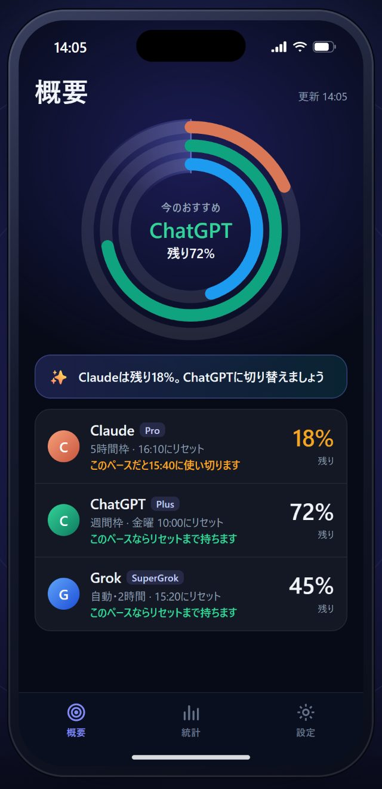
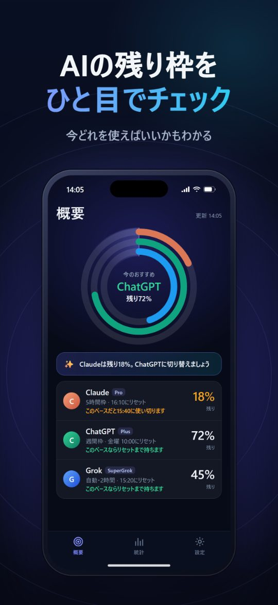
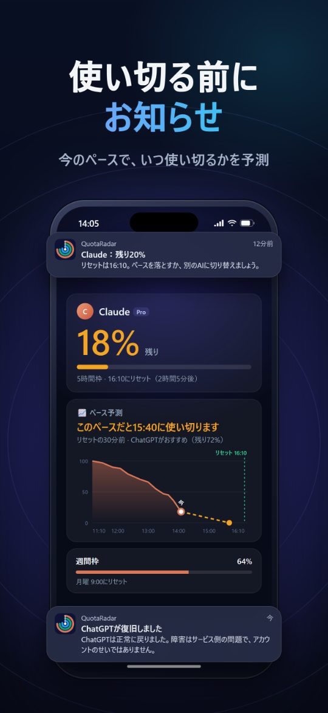
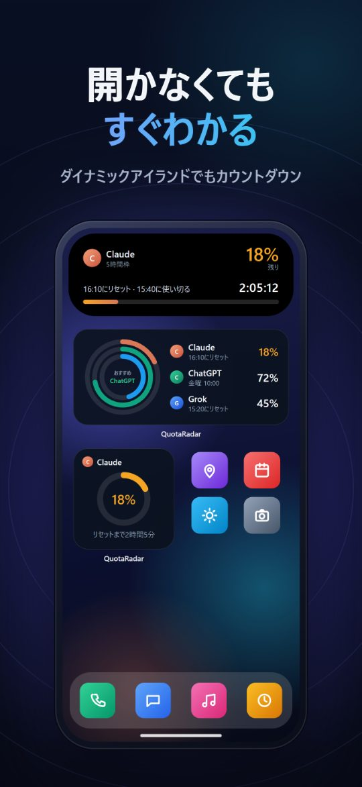
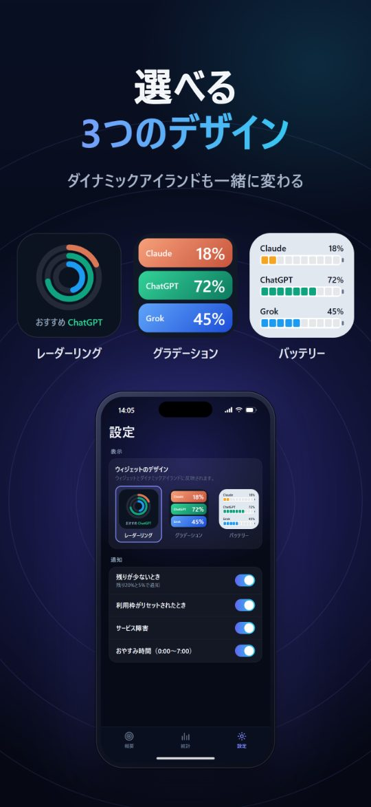
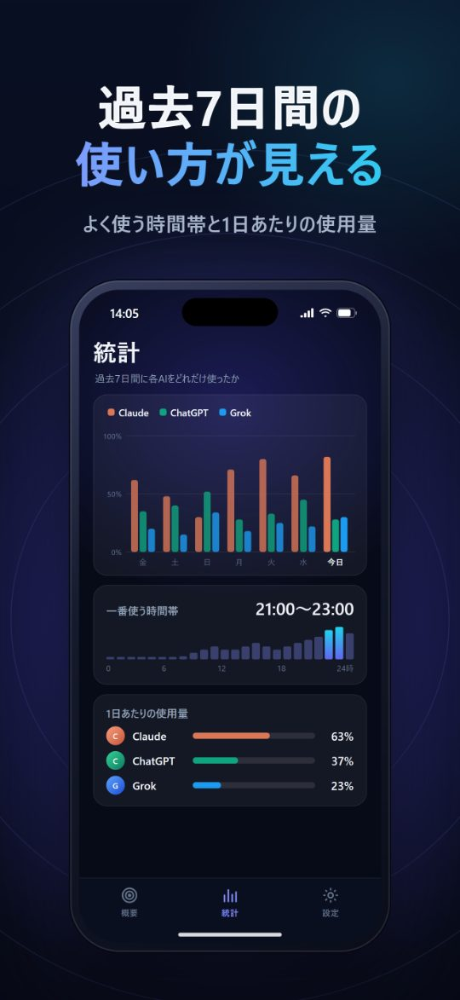
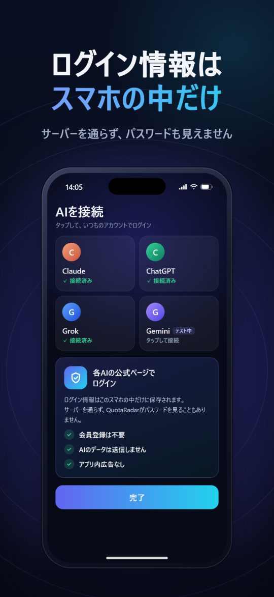
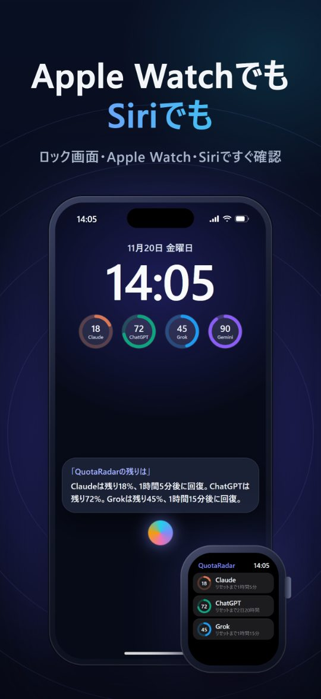

ホーム画面、ロック画面、ダイナミックアイランド、Apple Watchで確認。使い切る前にお知らせし、今どのAIを使うべきかも教えてくれます。

各AIの利用上限を見張るアプリです。毎回サイトを開いて確認する必要も、会話の途中で突然止められることもありません。

レーダーリングで各AIの残りとリセット時刻を表示。「今のおすすめ」で使うべきAIがわかります。同じAIで複数アカウントにも対応。

ペース予測で上限に達する時刻を計算。残り20%と5%で通知（変更可能）、リセットやサービス障害もお知らせします。

ホーム画面・ロック画面のウィジェットとダイナミックアイランドが、リセットまで自動でカウントダウン。

レーダーリング、グラデーション、バッテリー。ウィジェットとダイナミックアイランドも一緒に変わります。

過去7日間の各AIの使用量、よく使う時間帯、1日あたりの使用量。

各AIの公式ページでログイン。サーバーを通らず、QuotaRadarがパスワードを見ることもありません。

Apple Watchのアプリとコンプリケーション。「QuotaRadarの残りは」と話しかけると、Siriが読み上げます。
同じAIで複数のアカウント（仕事用・個人用など）を登録できます。
β はテスト中のサービスです。QuotaRadarは独立したアプリであり、Anthropic、OpenAI、xAI、Google、Metaとは提携していません。各名称は各社の商標です。残り枠は各サービスが表示する値に基づきます。
会員登録も広告もなし
ずっと使える・サブスクなし
アプリを初めて開いた日から3日間、完全版を無料で試せます。価格はお住まいの地域のApp Storeに表示される金額です。アプリ内で購入できます。
iPhone、iPad、Apple Watchに対応。Android版は近日公開です。
ご質問やご意見はサポートページ、またはメール wings6891@gmail.com へ。